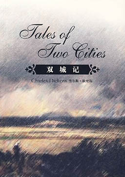
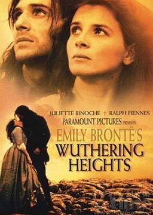
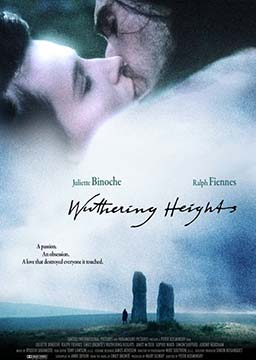
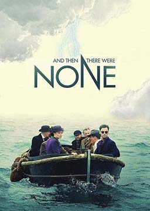
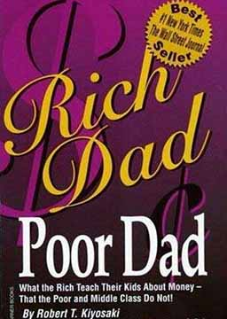
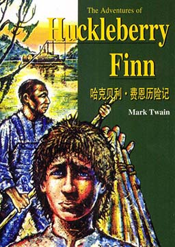

双语小说
收录中英文双语小说300多部，包括世界经典名著、社会小说、悬疑小说等短篇和长篇小说，可按照初中难度、高中难度和大学难度分类阅读，每部小说都有分段中英文对照，点击单词可查看中文翻译。

双城记 (A Tale of Two Cities)
作者：查尔斯·约翰·赫法姆·狄更斯 (Charles John Huffam Dickens) [英国]
1775年12月的一个月夜，寓居巴黎的年轻医生马内特散步时，突然被厄弗里蒙得侯爵兄弟强迫出诊。在侯爵府第中，他目睹一个发狂的绝色农妇和一个身受剑伤的少年饮恨而死的惨状，并获悉侯爵兄弟为了片刻淫乐杀害他们全家的内情。他拒绝侯爵兄弟的重金贿赂，写信向朝廷告发。不料控告信落到被告人手中，医生被关进巴士底狱，从此与世隔绝，杳无音讯。两年后，妻子心碎而死。幼小的孤女露茜被好友罗瑞接到伦敦，在善良的女仆普洛丝抚养下长大。双城记（简化版） (A Tale of Two Cities)
作者：查尔斯·约翰·赫法姆·狄更斯 (Charles John Huffam Dickens) [英国]
1775年12月的一个月夜，寓居巴黎的年轻医生马内特散步时，突然被厄弗里蒙得侯爵兄弟强迫出诊。在侯爵府第中，他目睹一个发狂的绝色农妇和一个身受剑伤的少年饮恨而死的惨状，并获悉侯爵兄弟为了片刻淫乐杀害他们全家的内情。他拒绝侯爵兄弟的重金贿赂，写信向朝廷告发。不料控告信落到被告人手中，医生被关进巴士底狱，从此与世隔绝，杳无音讯。两年后，妻子心碎而死。幼小的孤女露茜被好友罗瑞接到伦敦，在善良的女仆普洛丝抚养下长大。
呼啸山庄 (Wuthering Heights)
作者：艾米莉·勃朗特 (Emily Jane Bronte) [英国]
英国女作家勃朗特姐妹之一艾米莉·勃朗特的作品，是19世纪英国文学的代表作之一。此作品多次被改编成电影作品。内容简介：呼啸山庄的主人，乡绅欧肖先生带回来了一个身份不明的孩子，取名希斯克利夫，肖先生对西斯克里夫的宠爱引起了儿子亨德雷的强烈嫉妒。主人死后，亨德雷为报复把希斯克利夫贬为奴仆，并百般迫害，可是凯瑟琳跟他亲密无间，青梅竹马，他们相恋了。后来，凯瑟琳不得已嫁给了画眉田庄的文静青年埃德加。希斯克利夫悲痛欲绝之下选择出走，三年后致富回乡，凯瑟琳已嫁埃德加，却并不幸福。希斯克利夫为此进行疯狂的报复，通过设计赌博夺走了亨德雷的家财。亨德雷本人酒醉而死，儿子哈里顿成了奴仆。他还故意娶了埃德加的妹妹伊莎贝拉，进行迫害。内心痛苦不堪的凯瑟琳在生产中死去，临终前却紧紧抓住希斯克利夫不放。十年后，希斯克利夫又施计使埃德加的女儿小凯瑟琳，嫁给了自己即将死去的儿子小林顿。埃德加和小林顿都死了，希斯克利夫最终把埃德加家的财产也据为己有。复仇得逞了，但是他无法从对死去的凯瑟琳的恋情中解脱出来，最终不吃不喝苦恋而死。小凯瑟琳和哈里顿继承了山庄和田庄的产业，两人终于相爱，去画眉田庄安了家。
呼啸山庄（简化版） (Wuthering Heights)
作者：艾米莉·勃朗特 (Emily Jane Bronte) [英国]
呼啸山庄的主人，乡绅欧肖先生带回来了一个身份不明的孩子，取名希斯克利夫，肖先生对西斯克里夫的宠爱引起了儿子亨德雷的强烈嫉妒。主人死后，亨德雷为报复把希斯克利夫贬为奴仆，并百般迫害，可是凯瑟琳跟他亲密无间，青梅竹马，他们相恋了。后来，凯瑟琳不得已嫁给了画眉田庄的文静青年埃德加。希斯克利夫悲痛欲绝之下选择出走，三年后致富回乡，凯瑟琳已嫁埃德加，却并不幸福。希斯克利夫为此进行疯狂的报复，通过设计赌博夺走了亨德雷的家财。亨德雷本人酒醉而死，儿子哈里顿成了奴仆。他还故意娶了埃德加的妹妹伊莎贝拉，进行迫害。内心痛苦不堪的凯瑟琳在生产中死去，临终前却紧紧抓住希斯克利夫不放。十年后，希斯克利夫又施计使埃德加的女儿小凯瑟琳，嫁给了自己即将死去的儿子小林顿。埃德加和小林顿都死了，希斯克利夫最终把埃德加家的财产也据为己有。复仇得逞了，但是他无法从对死去的凯瑟琳的恋情中解脱出来，最终不吃不喝苦恋而死。小凯瑟琳和哈里顿继承了山庄和田庄的产业，两人终于相爱，去画眉田庄安了家。
我就要你好好的 (Me Before You)
作者：乔乔·莫伊斯 (Jojo Moyes) [英国]
你可以把生活变成故事，但你想不到故事的结局。露·克拉克知道很多事情。她知道从公共汽车站走回家有多少步。她知道她喜欢在“黄油面包”茶馆工作，喜欢这有点迷糊又有点窘迫的生活。她其实清楚地知道自己或许不喜欢男朋友帕特里克。露不知道的是她马上要失去她的工作，即将发生的事情会让她猝不及防。威尔·特雷纳知道摩托车事故带走了本可以波澜壮阔的人生。他现在觉得每件事情都毫无意义，了无生趣。他确切地知道该怎样结束这一切。威尔不知道的是露将穿着她五颜六色的衣服，闯进他的世界，而彼此的生活将彻底改变……
无人生还 (And Then There Were None)
作者：阿加莎·克里斯蒂 (Agatha Christie) [英国]
英国推理小说作家阿加莎·克里斯蒂创作的长篇小说，出版于1939年。该作全球销量超过一亿册。被改编成多部影视、戏剧、漫画、游戏作品。内容简介：八个素不相识的人受邀来到海岛黑人岛上。他们抵达后，接待他们的却只是管家特夫妇俩。用晚餐的时候，餐厅里的留声机忽然响起，指控他们宾客以及管家夫妇这十人都曾犯有谋杀罪。众人正在惶恐之际，来宾之一忽然死亡，噩梦由此开始了。餐桌上还有十个小瓷像。从第一天晚上开始的几天时间里，每天都有人按着儿歌里述说的方式死去，每死一个人，餐桌上的瓷瓶就会少掉一个。一时之间，人人自危，都希望能找出一个办法拯救自己的生命。可是海上起了大风浪，不可能寻得救援或者逃出生天。唯一的求生办法就是找出凶手。谁是凶手呢？荒岛已经被他们搜寻数遍，不可能有容身之处，所以凶手必然在他们中间。幸存着的人们彼此怀疑，彼此试探，可是一切的警戒一切的提防还是没有能阻止那最后一刻的到来。风浪停息了，岛上的明争暗斗也停息了，只留下了十具尸体……无人生还。弗兰肯斯坦（简化版） (Frankenstein)
作者：玛丽·雪莱 (Mary Shelley) [英国]
弗兰肯斯坦是个热衷于生命起源的生物学家，他怀着犯罪心理频繁出没于藏尸间，尝试用不同尸体的各个部分拼凑成一个巨大人体。当这个怪物终于获得生命睁开眼睛时，弗兰肯斯坦被他的狰狞面目吓得弃他而逃，他却紧追不舍地向弗兰肯斯坦索要女伴、温暖和友情；接踵而至的更是一系列诡异的悬疑和命案。
穷爸爸富爸爸 (Poor Dad, Rich Dad)
作者：罗伯特·清崎 (Robert Toru Kiyosaki) [美国]
罗伯特·清崎有两个爸爸：“穷爸爸”是他的亲生父亲，一个高学历的教育官员；“富爸爸”是他好朋友的父亲，一个高中没毕业却善于投资理财的企业家。清崎遵从“穷爸爸”为他设计的人生道路：上大学，服兵役，参加越战，走过了平凡的人生初期。直到1977年，清崎亲眼目睹一生 辛劳的“穷爸爸”失了业，“富爸爸”则成了夏威夷最富有的人之一。罗伯特·清崎毅然追寻“富爸爸”的脚步，踏入商界，从此登上了致富快车。
哈克贝利·费恩历险记 (Adventures of Huckleberry Finn)
作者：马克·吐温 (Mark Twain) [美国]
美国作家马克·吐温创作的长篇小说，这部小说从思想到技巧都有许多创新。小说赞扬了男孩哈克贝利的机智和善良，谴责了宗教的虚伪和信徒的愚昧，同时，塑造了一位富有尊严的黑奴形象。内容简介：过惯了自由散漫的流浪生活的哈克贝利，突然做了寡妇道格拉斯的养子，成天穿挺括的衣服，学习没完没了的清规戒律，实在令人难熬。一天，哈克贝利的失踪了一年多的酒鬼父亲突然出现，强迫儿子乘小船到一个避远林子小屋与他同住。结束循规蹈矩的生活，到林子里捉鱼打猎，自由自在，哈克贝利当然高兴。但是父亲逼他交出与汤姆平分的那笔钱财，喝醉发起酒疯时又常常打他，实在令人无法忍受。于是他趁父亲上镇卖木材的机会，先安排了一个自己被淹死的假象，然后就偷了小划子，逃到了杰克逊岛上。
哈克贝利·费恩历险记（简化版） (Adventures of Huckleberry Finn)
作者：马克·吐温 (Mark Twain) [美国]
哈克贝利逃亡到密西西比河上。遇到了勤劳朴实、热情诚实、忠心耿耿的黑奴吉姆，他为了逃脱再次被主人卖掉的命运，从主人家中出逃。两个人历经种种奇遇。